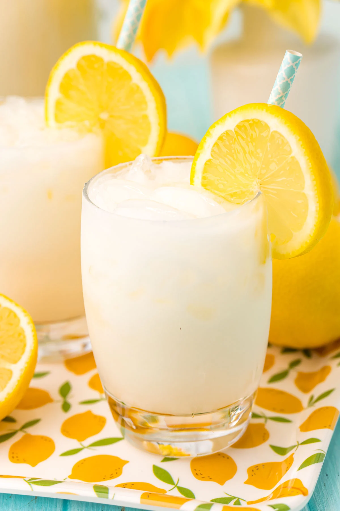

Creamy Lemonade

Description
What makes creamy lemonade different from traditional lemonade? One special ingredient: sweetened condensed milk. While folks in Brazil and Vietnam have been using sweetened condensed milk in lemon and lime drinks for years, most people in the U.S. only use it for holiday pies and desserts. This may seem like a strange ingredient to add to lemonade, but trust us, you're going to love it.
Ingredients
- The juice of 6 large lemons
- 100 ml of sweetened condensed milk
- 2tbsp of white sugar (optional based on your sweetness preference)
- 3 lemons, sliced thin
- Optional add-ins: raspberries, strawberries, mint, basil, etc.
Steps
- In a pitcher, combine the sweetened condensed milk and white sugar. Stir until the sugar is dissolved.
- Add the juice of 6 large lemons, and stir until it comes together.
- Next, fill the pitcher up about halfway with water, and stir all ingredients to combine.
- Fill the pitcher the rest of the way with ice, add the lemon slices, and stir until it's all well combined.
- Toss in any additional add-ins.
- Fill up the rest of the way with water.
- Serve over ice on a hot summer day.